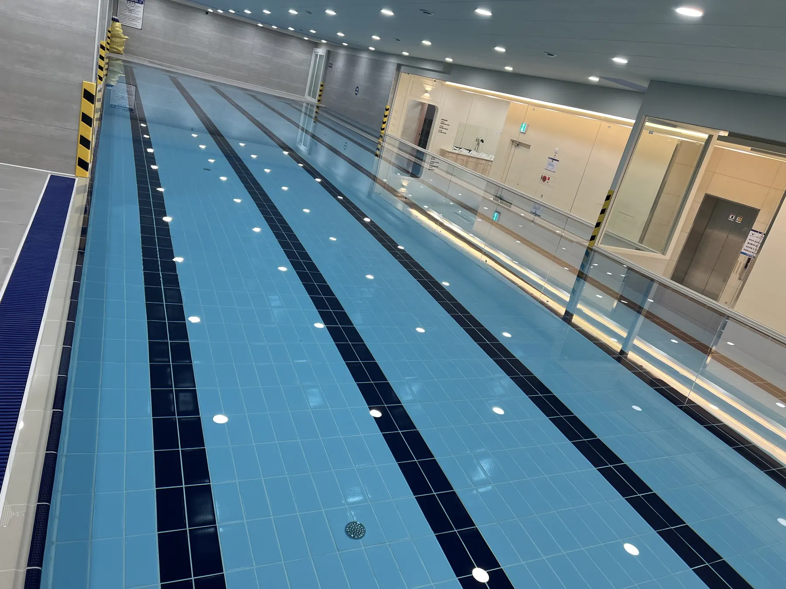
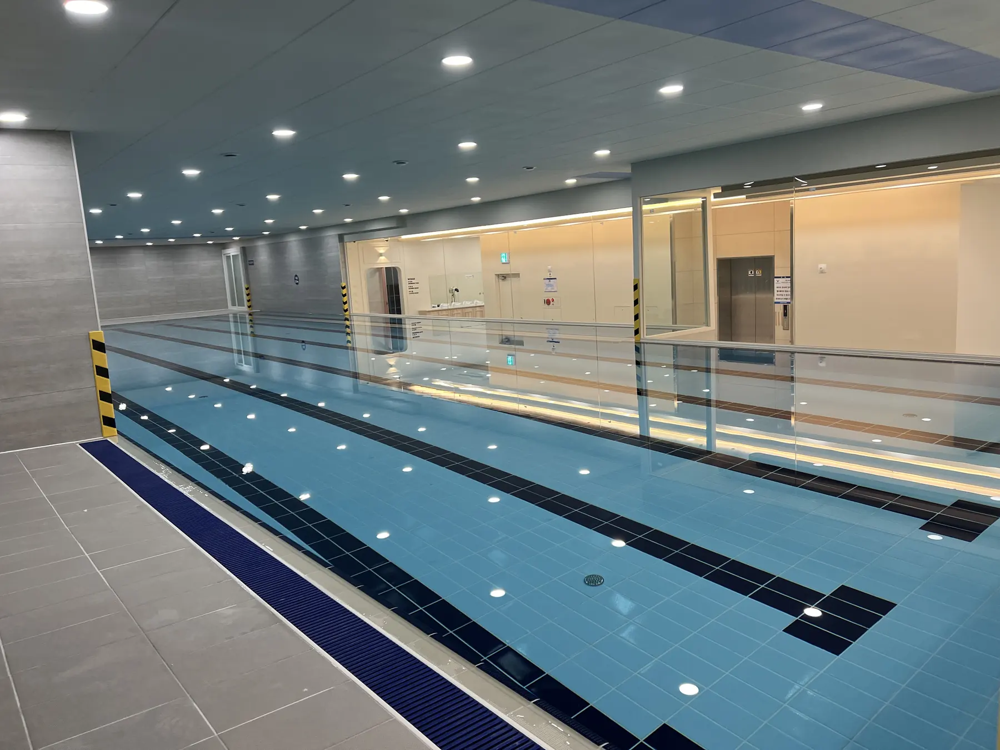
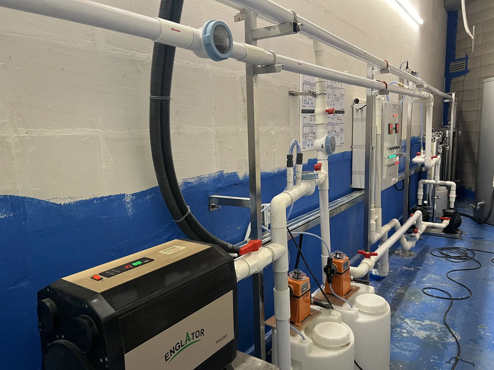
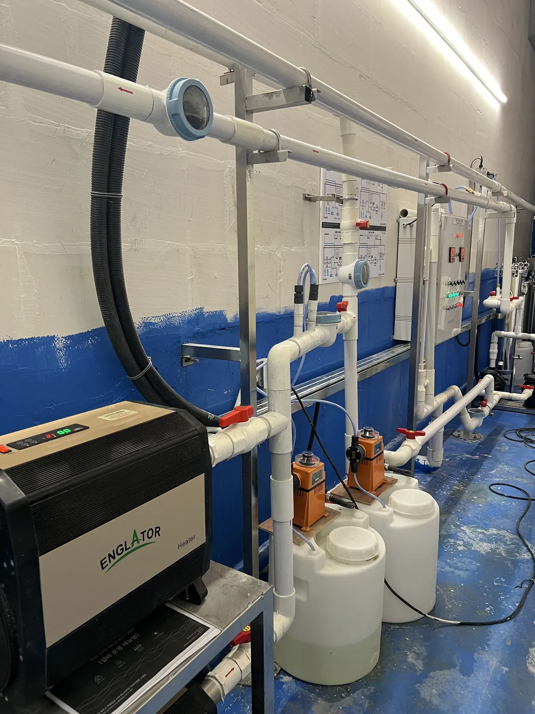
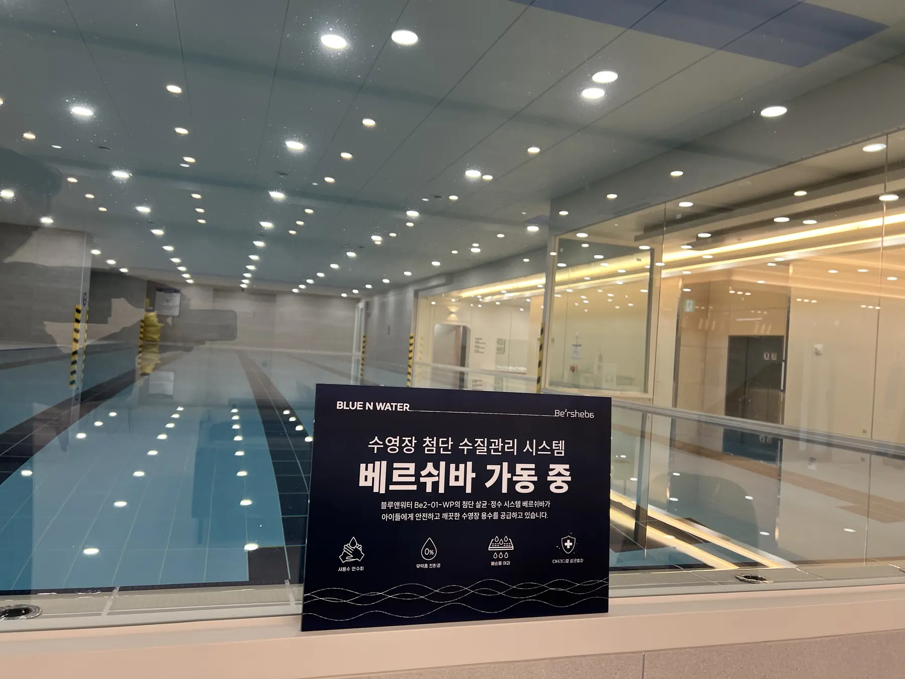

Kids Pool Water Management
Yangju Swimming Pool
A safe advanced water-quality management system for kids pools, installed as a BLUE N WATER Beersheba reference site
A safety-focused advanced water-quality management reference for kids pool facilities.

Yangju Swimming PoolKids Pool Water Management
Application Purpose
- Stabilization of water quality for kids pool operation
- Reduction of chemical usage and improved water-quality management efficiency
Treatment Capacity / Operational Effect
Approx. KRW 5 million annual chemical cost reduction compared with general pools / RaDX every 2 years, other media every 3 months recommended
AQUACOM / RaDX
A water treatment reference combining catalytic oxidation, filtration and reuse processes for site-specific requirements.
Field Gallery
Yangju Swimming Pool
Advanced water-quality management system for kids pool facility





